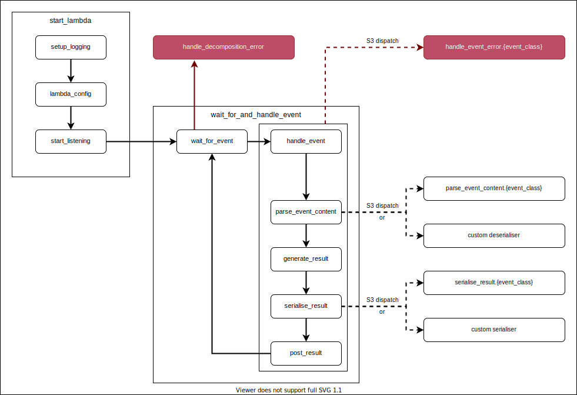

Running R containers on AWS Lambda.
This package is in active development, and is not yet ready for use.
Installation
remotes::install_github("mdneuzerling/lambdr")Running
In a runtime.R file, source all functions needed and then run:
lambdr::start_lambda()This runtime.R file should be executed by the Docker image containing your Lambda code.
The lambdr::start_lambda() function relies on environment variables configured by AWS. It will fail if run locally. In particular, the handler as configured by the user through AWS will determine which function handles the Lambda events. For debugging and testing, values can be provided to the function in the absence of environment variables. See ?lambdr::start_lambda for details.
Example
Consider the following runtime.R file:
parity <- function(number) {
list(parity = if (as.integer(number) %% 2 == 0) "even" else "odd")
}
lambdr::start_lambda(log_threshold = logger::DEBUG)The parity function accepts a number argument and returns its parity as a named list, for example:
parity(5)
# $parity
# [1] "odd"
parity(8)
# $parity
# [1] "even"This function can then be placed into a Docker image. An example is provided below, but the key components are:
- Start from the
public.ecr.aws/lambda/providedparent image, which provides the basic components necessary to serve a Lambda - Install R and dependencies, both system dependencies and R packages, including the
lambdrpackage - Copy across
runtime.Rand any other necessary files - Generate a simple bootstrap which runs
runtime.Rwith R - Set the handler as the
CMD. Thelambdrpackage interprets the handler as the name of the function to use, in this case, “parity”. TheCMDcan also be set (or overriden) when setting up the Lambda in AWS.
FROM public.ecr.aws/lambda/provided
ENV R_VERSION=4.0.3
RUN yum -y install wget git tar
RUN yum -y install https://dl.fedoraproject.org/pub/epel/epel-release-latest-7.noarch.rpm \
&& wget https://cdn.rstudio.com/r/centos-7/pkgs/R-${R_VERSION}-1-1.x86_64.rpm \
&& yum -y install R-${R_VERSION}-1-1.x86_64.rpm \
&& rm R-${R_VERSION}-1-1.x86_64.rpm
ENV PATH="${PATH}:/opt/R/${R_VERSION}/bin/"
# System requirements for R packages
RUN yum -y install openssl-devel
RUN Rscript -e "install.packages(c('httr', 'jsonlite', 'logger', 'remotes'), repos = 'https://packagemanager.rstudio.com/all/__linux__/centos7/latest')"
RUN Rscript -e "remotes::install_github('mdneuzerling/lambdr')"
RUN mkdir /lambda
COPY runtime.R /lambda
RUN chmod 755 -R /lambda
RUN printf '#!/bin/sh\ncd /lambda\nRscript runtime.R' > /var/runtime/bootstrap \
&& chmod +x /var/runtime/bootstrap
CMD ["parity"]The image is built and uploaded to AWS Elastic Container Registry (ECR). First, a repository is created:
This provides a URI, the resource identifier of the created repository. The image can now be pushed:
docker tag mdneuzerling/r-on-lambda:latest {URI}/parity-lambda:latest
aws ecr get-login-password | docker login --username AWS --password-stdin {URI}
docker push {URI}/parity-lambda:latestIn either the AWS console or the command line, a Lambda can be created from this image. Call the Lambda “parity” to match the function name. Tests can be executed within the console. Alternatively the Lambda can be invoked from the CLI:
aws lambda invoke --function-name parity \
--invocation-type RequestResponse --payload '{"number": 8}' \
/tmp/response.json --cli-binary-format raw-in-base64-outThe output is now available in the generated file:
Package structure and operating method
Runtime endpoints
The runtime works by querying HTTP endpoints configured by AWS Lambda. These endpoints are configured based on the “AWS_LAMBDA_RUNTIME_API” environment variable set by AWS Lambda during initialisation. They generally won’t be available locally.
- The next invocation endpoint is the endpoint which R must query for the next input. R must send a
GETrequest to this endpoint and will wait until either a response is received or the Lambda instance is shut down for inactivity. When Lambda receives an input from, say, an API Gateway, it will respond to the pending request with details of the input. We call the response to this request an invocation in this document, and invocations are interpreted as events. - The initialisation error endpoint is where an error should be sent if the error occurs when setting up the runtime. This is distinct from errors that occur during handling of an event.
- The response endpoint is where an event response should be sent. It is unique for each event.
- The invocation error endpoint is where errors that occur during event handling should be reported. It is unique for each event.
The next invocation and initialisation error endpoints are unique in each Lambda instance. The response and invocation error endpoints are determined by the request_id associated with each invocation. The request ID is given in the “lambda-runtime-aws-request-id” header in the response to the query of the next invocation endpoint.
Handler functions
Every Lambda instance is centred around a single function which handles any inputs. The handler function is determined by an environment variable which can be configured in one of two ways:
- as the
CMDto the Dockerfile which contains the runtime, or - as configured through the Lambda console (this takes precedence)
The setup_lambda function (run as part of start_lambda) picks up on this environment variable and identifies the function to which it refers. This handler function is used to process all invocations.
Event listening lifecycle
The main function, start_lambda, runs three functions in sequence:
setup_loggingsetup_lambdastart_listening
The start_listening function sets up an infinite loop that listens for invocations, interprets them as events, and processes them with the handler function.
Events need to be handled differently depending upon whether they are invoked directly, by an API Gateway, etc. Events are classified according to their detected invocation method, with their invocation stored as an S3 class. The following functions dispatch on this class:
-
parse_event_contentconverts the raw event content into arguments to be passed to the handler function -
seralise_resultconverts the result into the form that will be sent back to Lambda -
handle_event_errordeals with errors that occur during event handling. Some invocation types require errors to be formatted or handled in a very specific way.
start_listening triggers the listening loop, which consists of wait_for_event and handle_event (combined into wait_for_and_handle_event). Once a response (called an invocation) is sent to the request made in wait_for_event, it is decomposed into and classified into an event. If an error occurs during this stage it is handled by handle_decomposition_error. If possible the error will be posted to the error invocation endpoint so that Lambda can process it, but otherwise it will simply be logged and then the
The event is passed to handle_event which consists of the following steps:
-
parse_event_contentinterprets the event content as arguments to be handed to the handler function. The user can also provide a function to thedeseraliserargument ofstart_listening(orstart_lambda), which will override the standard parsing logic. -
generate_resultpasses these arguments to the handler function and generates a result. -
seralise_resultconverts the result into the response that will be sent to Lambda. The user can also provide a function to theserialiserargument ofstart_listening(orstart_lambda), which will override the standard serialisation logic. -
post_resultposts the serialised result to the response endpoint.
Afterwards, the runtime will return to the wait_for_event function and process the next invocation that arrives. AWS Lambda may shut down the instance if it times out before another event invocation arrives.
Alternatively, if an error occurs during wait_for_event it will be handled by handle_decomposition_error, or if it occurs during handle_event it will be dispatched to the appropriate handle_event_error method according to the S3 class of the event. In either case this will not stop the R session — an error when processing a single event is a problem for that event alone. The runtime will return to the wait_for_event step.
All of these functions are diagrammed below, with boxes representing functions which are grouped together according to the primary function that calls each of them in sequence. Errors are shown in red.
